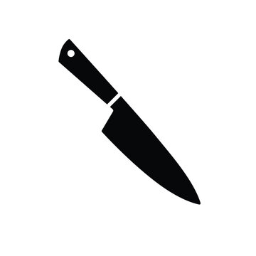

Gallery
Finished pieces and close-ups from the workshop. To order something like these, see our designs.



Finished pieces and close-ups from the workshop. To order something like these, see our designs.
